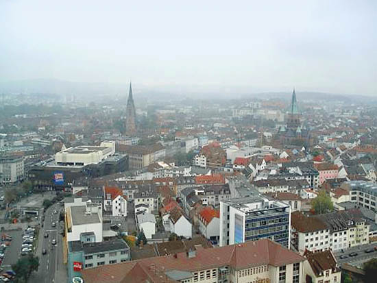

CSCI 1110 Lab
| Atlanta, GA | Heidelberg, Germany | Kaiserslautern, Germany |
|---|---|---|
|
 |
Whenever it's your first time meeting someone in college, the typical questions usually come up sometime in the discussion: How old are you? 18
, What dorm are you living in? Brumby
, What's your major? Finance
. All seem like easy questions to answer, right? All are simple for me, except for the dreadful question, Where are you from?
. Being somewhat of a military brat, I did not settle down in one place for my entire life, making this question require a more detailed answer than the usual one-word response. I grew up in Atlanta, but spent 8 years of my life in Germany, from the age of 9 to 17. What follows is usually that I get asked the same the confused questions, Do you speak German?
, Why were you in Germany?
, What's better America or Germany?
. I begin with explaining that I do not speak German (which is actually really sad because I was there for so long). Then I proceed into basically giving a narrative of my life beginning with my mom working for the United States Department of Defense being the reason for living overseas. I go on to describe how I grew up in Atlanta but spent almost half of my life overseas, which happens to be those critical years which shape who you are. I could easily say that I am from Atlanta, but I do not believe that is the entire truth. I do not feel I am a great representation of a true 'Atlantian' (someone from Atlanta).
I have changed schools a lot!
Living overseas in a foreign country forced me to come out of my comfort zone and try new things. I was submerged into an entirely different culture, and stuck out like a sore thumb being a young black boy in Europe. But because of all the different people I met, it made the transition much easier as I saw that I was not the only one trying to adjust to a new life. The military community has families coming in and out of cities every year and is great at getting those families adjusted.